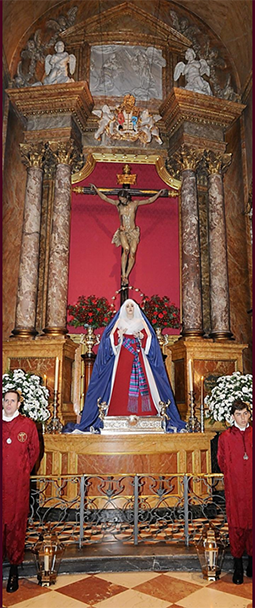

En función de la Espiritualidad propia y caracterástica de la Hermandad, puesta de manifiesto en el Capítulo 2º de los Estatutos, y sin perjuicio de otras actividades que pudieran programarse a propuesta del Director Espiritual y con aprobación de la Junta de Gobierno, la Hermandad como tal, tiene fijados los actos piadosos, internos y externos, que a continuación se especifican, todos encaminados a ayudar a los Hermanos a descubrir en la oración y en los Sacramentos, los modos más excelentes de dar culto a Dios. Estos actos consistirán en:
-
Jueves Eucarísticos. Los segundos jueves de mes: Exposición del Santísimo Sacramento, Meditación, Santo Rosario, Bendición con el Santísimo Sacramento y Santa Misa.
-
El día 14 de Septiembre, festividad de la Exaltación de la Santa Cruz, Exposición y Bendición con la Santa Reliquia de la Cruz (Lignum Crucis) de Nuestro Señor. Santa Misa con Homilía.
-
Solemne Triduo en honor del Santísimo Cristo de la Fe y del Perdón el lunes, martes y miércoles anteriores al Domingo de Ramos, con Santa Misa y Homilía
-
Solemne Vía-Crucis de Penitencia el viernes anterior al Domingo de Ramos (antiguo Viernes de Pasión o de Dolores), con la imagen del Santísimo Cristo llevado, de forma sencilla, a hombros por los Hermanos
-
Salida Procesional (Estación de Penitencia), en la tarde del Domingo de Ramos, con los pasos del Señor y de la Santísima Virgen, llevados por Hermanos costaleros y acompañados de Hermanos y Hermanas nazarenos y Hermanas Damas de mantilla.
-
Celebración de la octava del Corpus Christi. Procesión con el Santísimo Sacramento, organizada por la Hermandad.
-
Solemne Quinario en honor de María Santísima Inmaculada, Madre de la Iglesia, con Santa Misa y Homilía.
-
Solemne Vía-Crucis, por el interior de la Iglesia, el Viernes Santo.
-
En el mes de noviembre, Santa Misa por todos los difuntos de la Hermandad; la fecha se concretará cada año..
-
Santa Misa con Homilía y canto de la Salve, con motivo de la apertura y clausura de cada curso cofrade.
-
Santo Rosario, Santa Misa con Homilía y canto de la Salve todos los sábados.
-
Asistencia de la Hermandad, cuando sea requerida a acudir como tal, a los actos de culto que organice la Archidiócesis, especialmente a la Procesión del Corpus Christi.